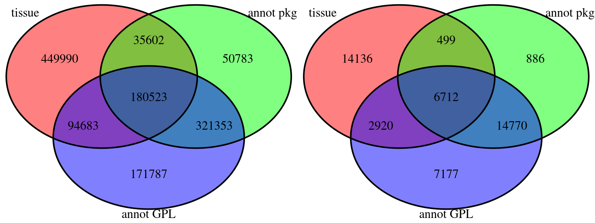
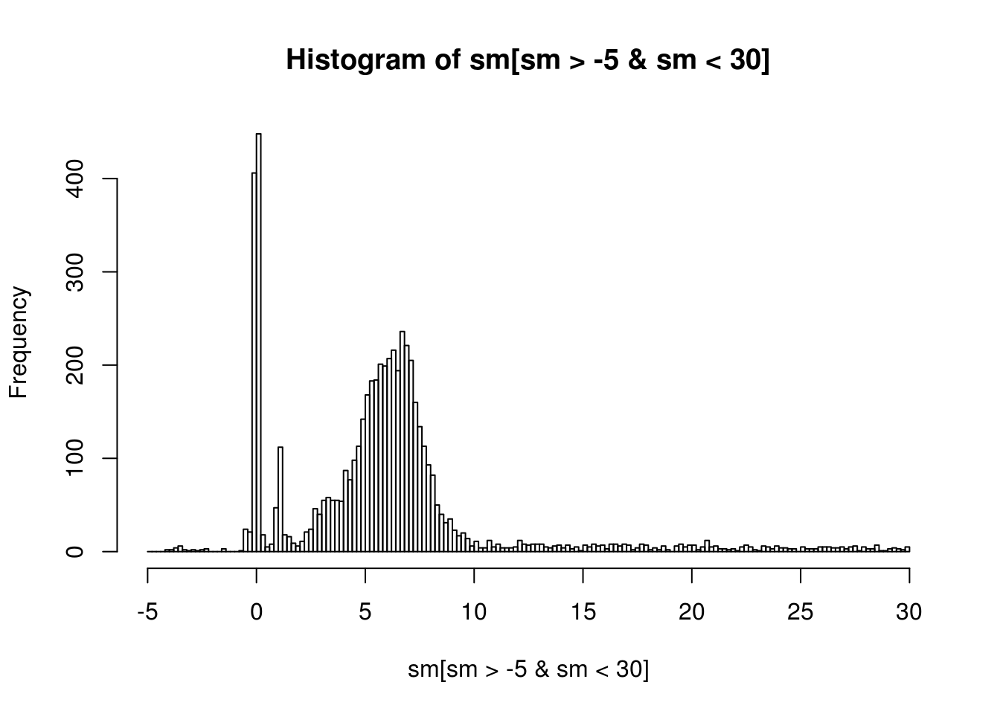

5 Sample Selection and processing
5.1 Sample Preselection
Here, we document the sample selection process before running BioQC.
5.1.1 Required annotation
A sample is usable for this study, if
- the gene symbos are annotated (requirement to run BioQC)
- the tissue of origin is annotated (requirment to draw conclusions about contamination)
We consider two approaches for annotating gene symbols:
- Using the Bioconductor AnnotationDbi package. The GEOmetadb provides a mapping of the GPL identifier to these packages.
- Using the
annotGPL=TRUEoption of GEOquery’sgetGEO. This requires an annotation file being available for the respective platform. We retrieved a list of the available annoataion files in an earlier step.
We compare the two methods with respect to the amount of usable samples that we can get.
First we need to run the sql-script annotation_stats which will create views summarizing the amount of usable samples. From these views, we can calculate a Venn diagram:

The getGEO method appears to be the more powerful method. Ideal would be a combination of the two, however, for the sake of simplicity, we stick to getGEO, loosing 499 studies (35602 samples).
This leaves us with the following filtering result:
| comment | GSM | GSE |
|---|---|---|
| total | 1945417 | 73719 |
| tissue annotated | 760798 | 24267 |
| annotation file available | 768346 | 31579 |
| tissue and annotation file | 275206 | 9632 |
5.1.2 Export list of samples
We store the respective gse identifiers in results/gse_lists/gse_tissue_annotation.txt:
sqlGse = "
select distinct gse
from (
select *
from bioqc_studies_has_tissue
intersect
select *
from bioqc_studies_has_annot) u"
gse = dbGetQuery(mydb, sqlGse)
writeLines(gse$GSE, file(gse.file))5.2 Sample Processing with BioQC
The following processes are ressource intensive, therefore we execute them on a high performance cluster (HPC). We use chunksub to distribute the list of sample ids to the workers. This involves four major steps which are also documented in the project’s Makefile.
- We download the studies with GEOquery and store them as R ExpressionSet using the R script geo_to_eset.R. For some series, the download is not successful.
- We annotated human orthologous genes for all studies using ribiosAnnotation in annotate_eset.R. This is necessary as the tissue signatures are built on a human dataset. The annotation failes for species which are not in the ribios database.
- We run BioQC on these studies use run_bioqc.R.
- Finally, we prefilter BioQC’s results for having a p-value < 0.05 and import them into the database.
5.3 Sample Post-selection
The failures during download and annotation reduce the number of samples available to our study.
sql_select = "
select /*+ USE_HASH(bs, bgg) parallel(16) */ count(distinct bg.gsm) as GSM
, count(distinct bgg.gse) as GSE"
sql_from = "
from bioqc_bioqc_success bs
join bioqc_gsm bg
on bg.gsm = bs.gsm
join bioqc_gse_gsm bgg
on bgg.gsm = bs.gsm
"
sql_where = ""
res = dbGetQuery(mydb, str_c(sql_select, sql_from, sql_where, sep="\n"))
kable(res)| GSM | GSE |
|---|---|
| 253210 | 8083 |
5.3.1 Excluding multi-channel microarrays
Multi channel microarrays date back to the early age of gene expression studies. They don’t provide absolute gene expression data and are not meaningful outside their experimental context. We therefore exclude these experiments:
sql_select2 = sql_select
sql_from2 = sql_from
sql_where2 = str_c(sql_where, "where channel_count = 1", sep="\n")
res = dbGetQuery(mydb, str_c(sql_select2, sql_from2, sql_where2, sep="\n"))
kable(res)| GSM | GSE |
|---|---|
| 235237 | 7561 |
5.3.2 Exclude non-mapped tissues
We exclude samples that have a tissue annotated, but it is not mapped to a normalized tissue.
sql_select3 = sql_select2
sql_from3 = str_c(sql_from2, "
join bioqc_normalize_tissues bnt
on bnt.tissue_orig = lower(bg.tissue_orig)", sep="\n")
sql_where3 = sql_where2
res = dbGetQuery(mydb, str_c(sql_select3, sql_from3, sql_where3, sep="\n"))
kable(res)| GSM | GSE |
|---|---|
| 135670 | 3770 |
5.3.3 Select organisms
We were interested in the organism distribution.
sql_select4 = str_c(sql_select3, ", bg.organism_ch1", sep="\n")
sql_from4 = sql_from3
sql_where4 = sql_where3
res = dbGetQuery(mydb, str_c(sql_select4, sql_from4, sql_where4, "
group by organism_ch1
order by gsm desc", sep="\n"))
kable(res)| GSM | GSE | ORGANISM_CH1 |
|---|---|---|
| 65769 | 1201 | Homo sapiens |
| 38096 | 2267 | Mus musculus |
| 29909 | 278 | Rattus norvegicus |
| 1082 | 24 | Macaca mulatta |
| 259 | 7 | Macaca fascicularis |
| 202 | 2 | Mus musculus musculus x M. m. domesticus |
| 80 | 2 | Cercocebus atys |
| 57 | 1 | Oryctolagus cuniculus |
| 36 | 1 | Chlorocebus aethiops |
| 32 | 3 | Mus musculus domesticus |
| 25 | 1 | Pan troglodytes |
| 23 | 1 | Papio cynocephalus |
| 19 | 1 | Mus spretus |
| 18 | 1 | Capra hircus |
| 16 | 1 | Phodopus sungorus |
| 12 | 1 | Papio hamadryas |
| 12 | 1 | Mus musculus musculus x M. m. castaneus |
| 8 | 1 | Macaca nemestrina |
| 6 | 1 | Mus musculus musculus |
| 6 | 1 | Mus musculus castaneus |
| 3 | 1 | Mus sp. |
Results suggest that it makes sense to limit the analysis to the three main organisms: H. sapiens, M. musculus, R. norvegicus. This makes also sense as these species are closesly related and therefore the signatures are more likely to translate within these species. We are left with the following amount of samples:
sql_select5 = sql_select3
sql_from5 = sql_from4
sql_where5 = str_c(sql_where4, "
and organism_ch1 in ('Homo sapiens', 'Mus musculus', 'Rattus norvegicus')", sep="\n")
res = dbGetQuery(mydb, str_c(sql_select5, sql_from5, sql_where5, sep="\n"))
kable(res)| GSM | GSE |
|---|---|
| 133774 | 3727 |
5.3.4 Exclude normalized studies
sql = "
select study_median
from bioqc_gse_gpl
where study_median is not null"
res = dbGetQuery(mydb, sql)
sm = res$STUDY_MEDIAN
hist(sm[sm > -5 & sm < 30], breaks=seq(-5, 30, .2))
We observe three peaks, the first and second have been normalized in some way. We focus on the studies with a median between 3 and 9.
TODO do proper fit of distributions and rationale based on standard deviation
sql_select6 = sql_select5
sql_from6 = str_c(sql_from5, "
join bioqc_gse_gpl bgl on
bgg.gse = bgl.gse and bg.gpl = bgl.gpl", sep="\n")
sql_where6 = str_c(sql_where5, "
and study_median between 3 and 9", sep="\n")
res = dbGetQuery(mydb, str_c(sql_select6, sql_from6, sql_where6, sep="\n"))
kable(res)| GSM | GSE |
|---|---|
| 82933 | 1837 |
This is the ‘background’ of samples on which we test for tissue contamination. We store the selected samples alongside with meta information required for the analysis in the materialized view BIOQC_SELECTED_SAMPLES in our DBS. Here is the SQL script generating the materialized view.
5.3.5 Tissue abundance
The following table shows how many samples are available for each tissue:
sqlTissue = "
select /*+ parallel(16) */ tissue, count(distinct gsm) as samples from bioqc_selected_samples
group by tissue
order by samples desc"
resTissue = dbGetQuery(mydb, sqlTissue)
kable(resTissue)| TISSUE | SAMPLES |
|---|---|
| blood | 33055 |
| liver | 27029 |
| lung | 9732 |
| kidney | 7588 |
| bone marrow | 6581 |
| brain | 5824 |
| heart | 4819 |
| breast tumor | 4238 |
| spleen | 3518 |
| adipose | 2857 |
| skeletal muscle | 2474 |
| skin | 2326 |
| hippocampus | 2059 |
| colon | 1954 |
| hepatocyte | 1874 |
| tumor | 1679 |
| white blood cells | 1551 |
| lymph node | 1335 |
| breast | 1227 |
| cerebellum | 1200 |
| testis | 1131 |
| pbmc | 936 |
| frontal cortex | 805 |
| pancreas | 770 |
| placenta | 766 |
| retina | 714 |
| pancreatic islets | 647 |
| thymus | 642 |
| ovary | 570 |
| prostate | 523 |
| mammary gland | 479 |
| hypothalamus | 470 |
| jejunum | 456 |
| prefrontal cortex | 410 |
| cortex | 336 |
| embryo | 290 |
| uterus | 246 |
| cervix | 148 |
| stomach | 139 |
| salivary gland | 133 |
| bladder | 123 |
| ventral midbrain | 78 |
| eye | 69 |
| adrenal gland | 67 |
| monocyte | 59 |
| neuroblastoma | 45 |
| plasma | 9 |